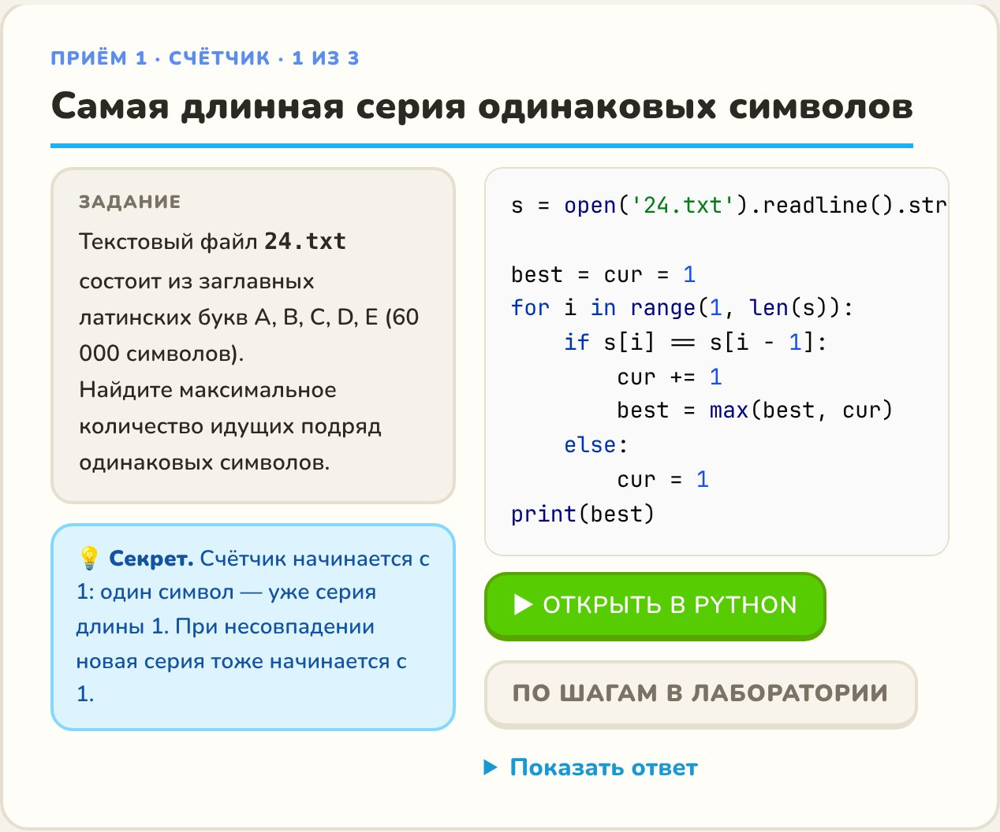
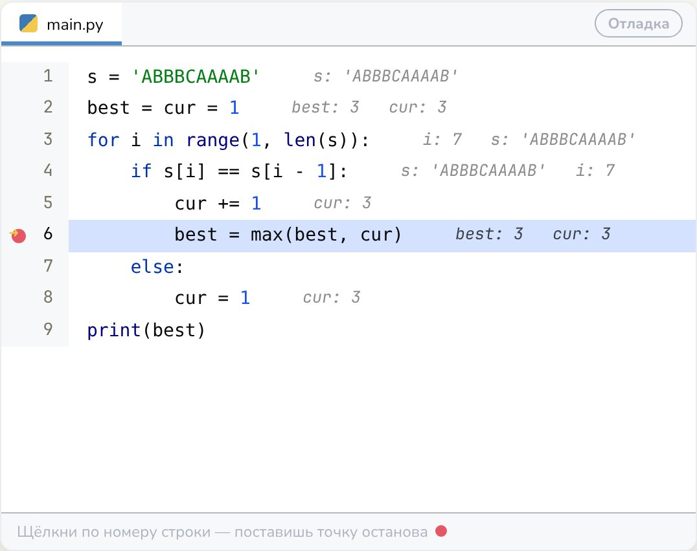
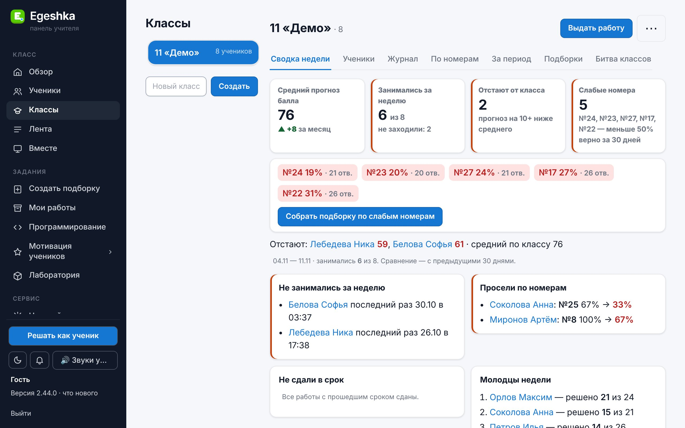
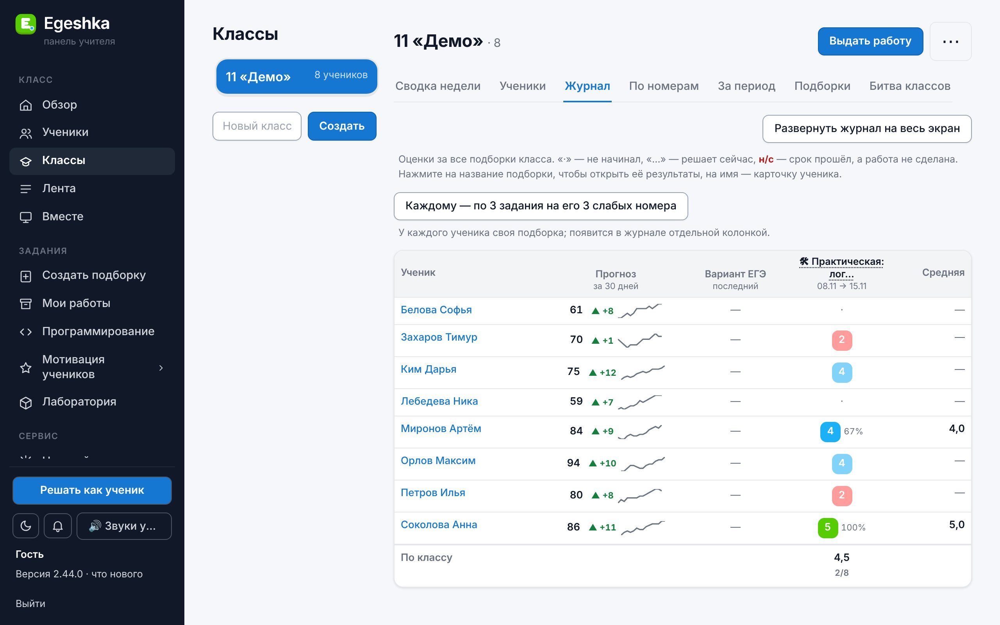

Задания, уроки и Python для подготовки к ЕГЭ — в одном месте
Все 27 номеров с проверкой ответа и разбором. Каждый день сайт сам собирает короткий план: что потренировать и какие ошибки повторить. Учитель видит результаты класса.
Нажимая, вы принимаете соглашение и политику.

Что есть на сайте
Наведите на пункт — появится подробность.
Все номера экзамена, проверка сразу
Не получается — подсказка в два шага, потом разбор. Задание с ошибкой через несколько дней вернётся на похожем примере.

Урок по каждому номеру
Все типы задания на примерах: решение, программа и типичные ошибки. Программу со слайда можно запустить одной кнопкой или пройти по шагам.
полный урок, 18–34 слайда · остальные — краткий разбор

Python и отладчик прямо в браузере
Ничего не нужно устанавливать. Код выполняется по шагам: видно текущую строку и значение каждой переменной.

Весь класс — в одной панели
Подборки по шаблонам, контрольные, журнал с ответами каждого ученика и сводка по слабым номерам. На снимках — демо-класс с вымышленными учениками.




Чтобы заниматься регулярно
На главной ученика — план на сегодня из 3–4 дел. А это помогает не бросать:
Ученику
- Зарегистрируйся: ФИО, логин и пароль. Если учитель дал код — ты сразу в классе.
- Открой план на сегодня — сайт подберёт номера, где больше всего ошибок.
Учителю
- Зарегистрируйтесь: ФИО, почта и пароль.
- Создайте класс, позовите учеников ссылкой или QR-кодом и выдайте первую подборку.